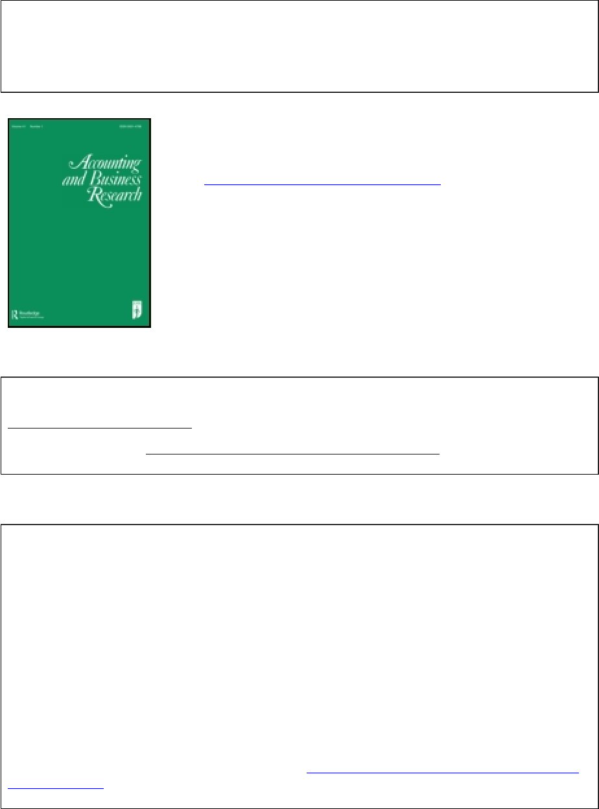
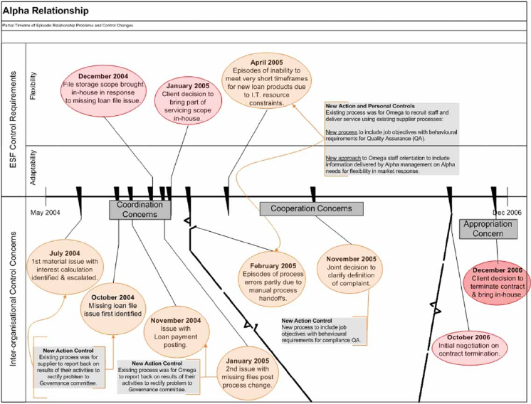

This article was downloaded by: [Open University Library - ISRAEL]
On: 28 October 2013, At: 11:28
Publisher: Routledge
Informa Ltd Registered in England and Wales Registered Number: 1072954 Registered
office: Mortimer House, 37-41 Mortimer Street, London W1T 3JH, UK
Accounting and Business Research
Publication details, including instructions for authors and
subscription information:
http://www.tandfonline.com/loi/rabr20
The control dynamics of outsourcing
involving an early-stage firm
Jim Rooney
a
& Suresh Cuganesan
b
a
Discipline of Accounting, School of Business, University of
Sydney, Sydney, NSW 2006, Australia
b
Dean's Unit, School of Business, University of Sydney, Sydney,
NSW 2006, Australia
Published online: 28 Aug 2013.
To cite this article: Jim Rooney & Suresh Cuganesan (2013) The control dynamics of outsourcing
involving an early-stage firm, Accounting and Business Research, 43:5, 506-529, DOI:
10.1080/00014788.2013.818916
To link to this article: http://dx.doi.org/10.1080/00014788.2013.818916
PLEASE SCROLL DOWN FOR ARTICLE
Taylor & Francis makes every effort to ensure the accuracy of all the information (the
“Content”) contained in the publications on our platform. However, Taylor & Francis,
our agents, and our licensors make no representations or warranties whatsoever as to
the accuracy, completeness, or suitability for any purpose of the Content. Any opinions
and views expressed in this publication are the opinions and views of the authors,
and are not the views of or endorsed by Taylor & Francis. The accuracy of the Content
should not be relied upon and should be independently verified with primary sources
of information. Taylor and Francis shall not be liable for any losses, actions, claims,
proceedings, demands, costs, expenses, damages, and other liabilities whatsoever or
howsoever caused arising directly or indirectly in connection with, in relation to or arising
out of the use of the Content.
This article may be used for research, teaching, and private study purposes. Any
substantial or systematic reproduction, redistribution, reselling, loan, sub-licensing,
systematic supply, or distribution in any form to anyone is expressly forbidden. Terms &
Conditions of access and use can be found at http://www.tandfonline.com/page/terms-
and-conditions

The control dynamics of outsourcing
involving an early-stage firm
JIM ROONEY
a
∗
and SURESH CUGANESAN
b
a
Discipline of Accounting, School of Business, University of Sydney, Sydney, NSW 2006, Australia;
b
Dean’s Unit, School of Business, University of Sydney, Sydney, NSW 2006, Australia
Firms in the early stage of their organisational lifecycle experience challenges that shape the
adoption of management controls. They are also recognised for their use of outsourcing.
However, the accounting research has provided limited insight on how these control
challenges and inter-organisational control concerns interact to influence the adoption of
specific controls within an outsourcing relationship involving an early-stage firm.
Exploration of this gap provides a key motivation for this paper. Contrary to existing
management control and organisational science literature, we find a strong preference for
new or enhanced action controls. Conversely, we find low levels of interest in result controls
by managers within the buyer but not the supplier firm. These preferences influence inter-
organisational control adoption within the frame of an incomplete outsourcing contract that
emphasises flexibility in terms of relationship exit. Within the limits of a case study
methodology, we argue that adoption of inter-organisational controls is shaped by tensions
between the control challenges of early-stage firms, the control preferences of managers
within these firms and inter-organisational control concerns. These findings have theoretical
implications, expanding the Davila et al. [2009. Reasons for management control systems
adoption: insights from product development systems choice by early-stage entrepreneurial
companies. Accounting, Organizations and Society, 34 (3 –4), 322–347] framework and the
Merchant [1985. Control in Business Organizations. Boston, MA: Pitman] control typology
into an ESF inter-organisational control context.
Keywords: management control; early-stage firms; organisational life cycle; outsourcing;
inter-organisational relationships
Outsourcing when you are a high growth company is a good idea. You don’t have to flex your internal
operation as quickly but you have to make sure that your provider can flex. So, you want to have a
provider that is significantly bigger than you. If you are growing at 200% or more year on year, if it’s a
small piece of a large company, they may need to grow at 10% to cover the growth. It’s much easier to
grow at 10% for a large company than 200% as a small one. You effectively de-risk that high growth.
(Chief Operating Officer. outsourcing case study Buyer firm)
# 2013 Taylor & Francis
∗
Corresponding author. Email: jim.rooney@sydney.edu.au
Accounting and Business Research, 2013
Vol. 43, No. 5, 506– 529, http://dx.doi.org/10.1080/00014788.2013.818916
Downloaded by [Open University Library - ISRAEL] at 11:28 28 October 2013
1. Introduction
Management control systems (MCS) research has conventionally focused on mature companies
with established control systems (Cardinal et al. 2004, Auzair and Langfield-Smith 2005). Atten-
tion has only recently turned to control adoption by newly established firms experiencing signifi-
cant growth, sometimes referred to as ‘early-stage’ firms (ESFs) or new high-growth firms (Davila
2005, Sandino 2007, Davila et al. 2009 ). This recent focus highlights that ESFs operate in a
business context with particular challenges for management control adoption. These encompass
significant environmental uncertainty, fluid managerial concerns and the need to be selective
about new formal control adoption, given the time and costs vis-a
`
-vis the limited resources of
the ESF (Granlund and Taipaleenmaki 2005, Sandino 2007). One notable effect of environmental
uncertainty is a management preference for flexibility in organisational routines and practice (see
Feldman and Pentland 2003). Recognised as a research gap, organisational flexibility is of
increasing interest in MCS research (Frow et al. 2010).
In addition, given that available cashflow and capacity to invest is limited, ESFs commonly
enter into inter-organisational relationships through, for example, outsourcing arrangements
(Granlund and Taipaleenmaki 2005). As summarised in Davila et al. (2009, p. 296):
... startups are resource-constrained and rely to a much larger extent than large companies on partner-
ships and networks; however, little research has addressed the question of the design of control mech-
anisms for these relationships.
In turn, inter-organisational relationships create pressures for contracting and formal control
adoption within an inter-organisational relationship to manage coordination, appropriation and
dependence concerns (Dekker 2004, Caglio and Ditillo 2008). However, these formal controls
may reduce organisational flexibility within the inter-organisational arrangement. Further, infor-
mal (e.g. personnel/cultural) controls are more complex where actors are located outside firm
boundaries (see Anderson et al. 2011).
Despite these distinctive ESF attributes, the limited accounting research to date on manage-
ment control in this context has focused on intra-organisational control (Sandino 2007). Consist-
ent with practice-oriented research (see Jarzabkowski et al. 2012), there is a need to investigate
‘how ... growing firms identify their need to adopt MCS’ (Davila 2005, p. 244), particularly
within an inter-organisational relationship. For example, the requirement for adaptability and
flexibility may impact inter-organisational arrangements (Busquets et al. 2009). In particular,
there is a need for accounting research that considers how control adoption addresses contexts
where roles assigned to individual controls conflict with one another (see Henri 2006).
In response, our research question examines how the ESF context influences the adoption of
controls within an outsourcing relationship involving an ESF buyer. We seek to contribute to the
inter-organisational control literature by exploring the tensions between ES F control challenges
associated with flexibility and inter-organisational control concerns. Exploration of these tensions
has potential to contribute to understanding of the role of actors, controls and environment within
an inter-organisation relationship involving an ESF buyer of outsourcing services. This research
focus is consistent with calls for further study of flexibility – control dynamics in both the organ-
isation (Kamoche and Cunha 2001) and accounting (van der Meer-Kooistra and Scapens 2008)
literatures.
We adopt the Davila et al. (2009) framework addressing reasons for an ESF to adopt new
management controls and the Merchant (1985) control typology within a case study method,
examining a single outsourcing arrangement in the residential home loan segment of the Austra-
lian financial services sector. The paper is structured into five remaining parts. The next section
reviews the relevant management control literature. This is followed by a description of the
Accounting and Business Research 507
Downloaded by [Open University Library - ISRAEL] at 11:28 28 October 2013
research site and methods. Empirical case study observations are presented next. Finally, the
paper ends with a discussion of findings and conclusions.
2. ESFs, outsourcing and inter-organisational control
Lack of established business operations and a rapidly changing level of business activity may
make it difficult for ESFs to undertake detailed MCS design. In this context, the challenge for
ESF management is to balance adaptabilit y to the business environment with flexibility in
MCS design. Collier (2005, p. 325) suggests ‘a “thin” accounting role may be sufficient to
ensure management control over the start-up firm operations’. This may apply especially
where formal controls are costly and time consuming to install and operate (Sandino 2007).
Indeed, it is only after an ESF undergoes significant growth that it turns to formal control
(Silvola 2008).
However, when examined by Davila et al. (2009), the challenge of linking ESF business adap-
tability with control flexibility leads to identification of a number of reasons for control adoption.
These reasons comprise: external influences either to (1) legitimise the firm or to (2) contract with
external parties and internal reasons (3) due to the appointment of key managers who implement
controls based on their prior experiences or (4) to support an explicit focus on goals in response to
emerging need such as coordination or (5) to control chaos created by unexpected events or (6) to
facilitate organisational learning. So, while a ‘thin’ role for accounting is seen in practice, the
limited research on control adoption by ESFs reflects a diverse range of influences on these
small numbers of controls adopted within ESFs.
At the same time, ESFs are acknowledged adopters of outsourcing and other forms of inter-
organisational relationships (see Granlund and Taipaleenmaki 2005, Metters 2008). Industry-
level factors, such as competitive uncertainty, and firm-level factors, including limited financial
resources, provide impetus to engage in outsourcing despite the inherent uncertainties of entering
into partnerships (see Kim and Higgins 2007). Further, outsourcing relationships are a common
form of supply network with value creation based on substantive knowledge flows (Li et al.
2010). These benefits make outsourcing arrangements a popular option for ESFs – as well as
more mature firms – entering markets and growing rapidly.
Whilst offering important insights, three key dimensions are lacking in prior research. First
and foremost, prior ESF control research neglects the inter-organisational dimension. This dimen-
sion is important to ESF success, especially in terms of interaction with the business environment
in which it operates. Inter-organisational networks and relationships are an important source of
resources and knowledge acquisition for ESFs (see Dyer and Hatch 2006). For example, in the
development of organisational capabilities in the early growth stages of a firm, ‘learning-by -
doing’ has been identified as a mediating factor (see Helfat and Peteraf 2003). The limited empiri-
cal research on ESF control adoption concludes that learning is a significant influence with con-
trols often implemented to ‘code existing practices’ (Davila et al. 2009, p. 338). Whilst
opportunities for management intervention and the development of capabilities created by the
adoption of controls apply to many firms (see Mouritsen et al. 2001), this role is arguably
more critical for ESFs (see Easterby-Smith et al. 2008), particularly with regard to the use of out-
sourcing relationships.
In contrast, there is an extensive literature on control adoption within inter-organisational
relationships involving mature buyer firms (Cardinal et al. 2004, Auzair and Langfield-Smith
2005). These studies identify that controls are adopted in order to attend to concerns with coordi-
nation, appropriation and dependency (Caglio and Ditillo 2008). Coordination concerns refer to a
lack of clearly defined inter-organisational boundaries, appropriation concerns involve ‘the risk of
opportunism by transaction partners’ and dependency concerns ‘relates to their economic
508 J. Rooney and S. Cuganesan
Downloaded by [Open University Library - ISRAEL] at 11:28 28 October 2013
relationship’ (Dekker 2008, p. 916). These inter-organisational concerns require the adoption
of controls, including cultural/personal controls such as trust (see Langfield-Smith and Smith
2003). Despite this finding, the influence of ESFs on control adoption within an inter-organis-
ational arrangement that includes an ESF buyer firm is yet to be examined. A summary of
definitions associated with the ESF control challenges of adaptability and flexibility is provided
in Table 1, along with a summary of definitions associated with the inter-organisational control
concerns identified by Caglio and Ditillo (2008).
Second, whilst prior studies identify the role of senior management appointments in influen-
cing formal control adoption (see Davila 2005, Davila et al. 2009), they do not explain the process
by which particular control types are identified by ESF managers as being imperative to an inter-
organisational relationship. As new ESF management functions emerge, competencies are intro-
duced, experts are hired and management hierarchy expands during growth (Greiner 1972). The
influence of functional specialists within firms affects inter-organisational control (see Seal 2004,
Cuganesan 2006). Given the strong influence of individual ESF managers on MCS practice
(Davila et al. 2009), the control behaviours of these individuals are likely to have significant con-
sequences for inter-organisational control.
As a result of these gaps, this paper examines how the nature of an ESF outsource buyer firm
influences the adoption of controls used in inter-organisational relationships. The focus is on the
mix of inter-organisational controls adopted over time in response to both ESF control challenges
and inter-organisational control concerns. This includes investigation of the fluctuating influence
of managers and experts from within the ESF buyer firm.
In addition to the Davila et al. (2009) framework, we embrace the control typology of Mer-
chant (1985) and Merchant and van der Stede (2003) drawing on and adapting the earlier work of
Ouchi (1979). As expressed by Anderson et al. (2011, p. 3) in a comparison of ‘popular’ manage-
ment control frameworks, this typology will particularly help to ‘identify the importance of per-
sonnel controls enacted through partner selection processes; a result that was not apparent using
Table 1. Definitions of control preferences and concerns.
ESF control preferences Control concerns (Caglio and Ditillo 2008, p. 891)
Flexibility –‘... a firm’s capability to meet changes
in market demands through integrated and
coordinated operational policies’ (Pagell and
Krause 2004 as cited in Patel 2011, p. 144).
‘... means that users can make controlling
decisions after enabling systems have provided
information’ (Adler and Borys 1996 as cited in
Wouters and Wilderom 2008, p. 492).
Coordination – where ‘interdependencies require
some form of coordination, and the joint actions
should be aligned across organisational boundaries
so as to guarantee a match between partners’
interfaces’
Appropriation – comprising the ‘need to ensure that
the value of the joint output is perceived by the
parties to be clearly and fairly distributed and that
the resources exchanged are not misappropriated by
their counterparts’
Adaptability –‘... enable exchange participants to
take advantage of opportunities in the exchange
environment when they arise and to avoid costly
threat to the continual delivery of mutual
benefits; thus enhancing overall performance
(Heide and Miner 1992)’ (as cited in Mahama
2006, p. 324).
Cooperation – broadly defined in terms of the
existence of threats of opportunism and moral
hazard whereby ‘... partners may have incentives
to cheat and free-ride in order to attain their own
specific goals at the expense of the objectives of the
collective undertaking, so they need to introduce
mechanisms to align their objectives’
Accounting and Business Research 509
Downloaded by [Open University Library - ISRAEL] at 11:28 28 October 2013
the other frameworks’. This is important given the ESF need for flexibility, leading to the adoption
of informal controls consistent with the ‘thin’ role for accounting highlighted earlier. Given the
organisational theory antecedents of the Davila et al. (2009) framework and the Merchant
(1985) control typology, this approach is consistent with the adoption of theoretical pluralism
in an accounting context (see Jacobs 2012).
Whilst initially developed as an intra-organisational typology and applied to the study of
control within ESFs (see Davila 2005), this control typology ‘... can easily be extended to part-
ners and other actors in networks, value-chains, etc’ (Malmi and Brown 2008, p. 298). This typol-
ogy sees controls as comprising formal and informal mechanisms. Formal mechanisms include:
action controls, which stipulate the actions that employees should follow and procedures they
should comply with, and result controls, which influence employees by measuring the outputs
or outcomes of their actions. Informal mechanisms are grouped as personnel/cultural controls,
which seek to align the values and goals of individuals with those of the firm.
Based on these previously distinct ESF and inter-organisational control frameworks, we antici-
pate that an inter-organisational relationship involving an ESF buyer is likely to adopt personnel/
cultural controls and result controls. These are aimed at addressing the ESF control challenges of
business adaptability and control flexibility expressed in terms of the Davila et al. (2009) frame-
work as proactive internal reasons to adopt new control mechanisms. At the same time, consistent
with prior inter-organisational control research, action controls may also be adopted in response to
inter-organisational appropriation and coordination concerns expressed in terms of the Davila et al.
(2009) framework as reactive reasons to adopt new control mechanisms. This tension between ESF
control challenges (expressed in terms of reasons to adopt new controls as described in Davila et al.
2009) and inter-organisational control concerns (Caglio and Ditillo 2008) expressed in terms of
new control mechanisms (Merchant 1985) is summarised in Table 2. For example, ESF managers
may influence the adoption of action, results or cultural/personnel to address coordination concerns
within the inter-organisational relationship depending on their prior experience and preferences –
an empirical question given prior contingency research findings.
The next section outlines the research methods and site used to explore these control tensions.
3. Case study details and research approach
3.1 Case study details
The case study reported in this paper comprises a single outsourcing arrangement involving an
ESF buyer within the Australian residential real estate lending industry. This industry is a signifi-
cant component of the banking sector, which plays a vital role in the Australian economy (Euro-
monitor 2003). The industry is also significant as it has a comparatively rich history of utilising
outsourced arrangements. Whilst a maturing industry in Australia, the successive deregulation of
the industry in the mid-1980s and the adoption of securitisation practices in response to increased
competition, saw the entry of a number of Non-Bank Financial Institutions in the 1990s (see Raja-
pakse 2006).
With the exception of Collier (2005), the use of a single case study to facilitate rich empirical
investigation of control adoption by ESFs is rare. However, it is justified on the basis of the theor-
etical and empirical research gap encapsulated in the research question identified the propositions
outlined earlier. This justification has been argued as being considered appropriate for exploratory
research and theory building (see Eisenhardt 1989, Yin 1994). The limitation of this approach is
that we are partly dependent on the accuracy and completeness of participants’ recollections of
historical events, although we seek to validate this through the use of multiple data sources
(refer to Section 3.2).
510 J. Rooney and S. Cuganesan
Downloaded by [Open University Library - ISRAEL] at 11:28 28 October 2013
Table 2. Analytical framework adapted from Caglio and Ditillo (2008), Davila et al. (2009) and Merchant
(1985).
Control
mechanisms Contract controls Action controls Results controls
Cultural/personnel
controls
Inter-
organisational
control
concern/reason
to adopt formal
controls
Coordination
– Legitimise
Use of terms and
conditions in an
outsourcing
contract to
symbolise
Legitimacy
(MCS
competency)
based on the
controls planned
or adopted
Adopted to specify
non-contractual
actions or
processes within
the relationship
to symbolise
Legitimacy
(MCS
competency)
Specify
measureable,
non-contractual
outcomes to be
achieved as a
symbol of
Legitimacy
(MCS
competency)
Engage or plan to
engage in social
practices aimed
at goal
congruence and
recognisable by
external
stakeholders as
symbolising
Legitimacy
(MCS
competency)
– Contracting Imposition of
contractual terms
and conditions to
enhance
monitoring of
contract
coordination
within the inter-
organisational
relationship
– Proactive
(manager
background
and need to
focus)
Use of contractual
terms and
conditions to
promote
accountability
and focus on
explicit goals
consistent with
the experience of
Buyer
management
Use of specific non-
contractual
actions or
processes to
promote
accountability
and focus on
explicit goals
consistent with
the experience of
Buyer
management
Use of
measureable,
non-contractual
outcomes to
promote
accountability
and focus on
explicit goals
consistent with
the experience of
Buyer
management
Use of social
practices aimed
at goal
congruence to
promote
accountability
and focus on
explicit goals
consistent with
the experience of
Buyer
management
– Reactive
(chaos and
learning)
Use of contractual
terms and
conditions to
manage
emerging
coordination
control problems
and code past
learning over the
duration of the
relationship
Use of specific non-
contractual
actions or
processes to
manage
emerging
coordination
control problems
and code past
learning over the
duration of the
relationship
Use of
measureable,
non-contractual
outcomes to
manage
emerging
coordination
control problems
and code past
learning over the
duration of the
relationship
Use of social
practices aimed
at goal
congruence to
manage
emerging
coordination
control problems
and code past
learning over the
duration of the
relationship
(Continued)
Accounting and Business Research 511
Downloaded by [Open University Library - ISRAEL] at 11:28 28 October 2013
As described below, the case involves an ESF (hereafter, Alpha) entering into an outsourcing
arrangement in 2001 with a mature phase supplier (Omega). Omega is part of a publicly listed mul-
tinational firm with global presence. Alpha is a specialised home loan lender based in Australia and
operating on a national basis. Set up in 2000, Alpha is a high growth ESF, initially with fewer than
20 employees with a range of skills and experience within the residential real estate lending indus-
try. These skills included all major functions usually present in a firm operating at a head office level
within this industry, including treasury, risk, accounting, human resources (HR), legal, market/
product and sales, with the exception of operations and information technology (IT). Staff experi-
ence levels ranged from 5 to more than 20 years. At the end of the research period, Alpha was of
medium size with a home loan portfolio value in the range of AUD5 –AUD50 billion (a range pro-
vided to protect the anonymity of Alpha), with more than 250 staff.
The outsourcing arrangement between Alpha and Omega commenced in 2001 and was ulti-
mately terminated in 2006. Within the five-year period of study, the ESF transitioned through to
high growth on the basis of new product development in a mature industry. After selecting Omega
as the outsourcing partner for operations and supporting IT functions, expertise was acquired in
order to manage and develop functions and systems not outsourced (treasury, trust management,
accounting, risk and HR). The outsourcing arrangement comprised business processes and IT
associated with key home lending operations. These included: mortgage sales lead generation,
including capture of home loan application details; home loan application acceptance, credit
decisions and the advancing of funds to the borrower; and, once the funds are advanced, main-
tenance and support of an existing home loan (ranging from inquiries on loan balance and chan-
ging loan details such as the postal address for documentation through to requests for loan
increases and closure).
Table 2. Continued.
Control
mechanisms Contract controls Action controls Results controls
Cultural/personnel
controls
Appropriation
– same
division into
Davila et al.
(2009)
framework as
for the
coordination
concerns
Imposition of
contractual terms
and conditions to
enhance
monitoring of
benefit
appropriation
concerns within
the inter-
organisational
relationship
Imposition of
specific non-
contractual
actions or
processes to
enhance
monitoring of
benefit
appropriation
concerns within
the inter-
organisational
relationship
Imposition of
measureable,
non-contractual
outcomes to
enhance
monitoring of
benefit
appropriation
concerns within
the inter-
organisational
relationship
Imposition of social
practices aimed
at goal
congruence to
enhance
monitoring of
benefit
appropriation
concerns within
the inter-
organisational
relationship
Cooperation
– same
division into
Davila et al.
(2009)
framework as
for the
coordination
concerns
Use of contractual
terms and
conditions to
manage
emerging control
problems and
code past
learning over the
duration of the
relationship
Use of specific non-
contractual
actions or
processes to
manage
emerging control
problems and
code past
learning over the
duration of the
relationship
Use of
measureable,
non-contractual
outcomes to
manage
emerging control
problems and
code past
learning over the
duration of the
relationship
Use of social
practices aimed
at goal
congruence to
manage
emerging control
problems and
code past
learning over the
duration of the
relationship
512 J. Rooney and S. Cuganesan
Downloaded by [Open University Library - ISRAEL] at 11:28 28 October 2013
3.2 Research approach
Consistent with the need to encompass a range of data sources (see Modell 2010), two data col-
lection methods were utilised. First, archival documents were coded and analysed based on the
approach described by Krippendorff (1980). These documents included outsourcing contracts,
governance meeting minutes and related performance reports associated with the Alpha –
Omega relationship, such as service reporting, service complaints tracking and one-off service
issue escalation documentation. Second, semi-structured interviews were conducted with person-
nel at both Alpha and Omega after the relationship had terminated. Further detail on both of these
data collection methods is provided below.
Document coding is an instrument to measure comparative positions and trends in the com-
position of documents and has been used extensively to assess reporting patterns and disclosures
(see Guthrie et al. 2004). It focuses on the semantic contact of key documents, selected based on
theoretical constructs summarised in Tables 1 and 2 earlier, in order to derive inferences and/or
gain understanding or draw conclusions from documents. Table 3 details the documents exam-
ined. Adding to the documents examined was quantitative performance measurement information
obtained from both Alpha and Omega.
Semi-structured interviews based on Bob Dick’s Convergent Interview method
1
were also
held with personnel at Alpha and Omega involved at both service delivery and relationship
management levels. Interviews focused on interviewees tracing through the relationship, iden-
tifying the main events that influenced the success or otherwise of the relationship, how the
relationship changed over time, how and why new controls were introduced and how each
party responded to these changes during the relationship. This qualitative technique was
selected on the basis that it has been identified as being specifically suited to exploratory
research of the type undertaken here. In the words of Driedger et al. (2006, p. 1146), adopting
the method in a study of Internet-based inter-organisational relationships, it ‘can be usefully
applied in under researched areas characterised by an absence or dearth of established theor-
etical and methodological foundations’.
Rao and Perry (2003) outline the comparative strengths and weakness of the convergent inter-
view method. Whilst the method has methodological weakness, particularly in relation of gener-
alisability of findings and its limited use outside of Australian case study research (Driedger et al.
2006), we suggest that these can be addressed by adopting alternate data sources and methods
(e.g. document analysis in this paper) in order to identify key themes that elaborate on existing
incomplete theorisation. Its prior use in action research is only one way of applying the
method to exploratory research (see Riege and Nair 2004).
We interviewed participants from a number of levels within both the buyer and supplier
firms in order to access different perspectives across and within the outsourcing firms. The
focus was on representatives at the key organisational levels within Alpha and Omega directly
responsible for outsourcing results during the term of the relationship. Hence, Relationship and
Service Management was strongly represented in the interview sample (100% and 75%,
Table 3. Case study dimensions – summary of archival documents analysed.
Document type Number
Minutes of meetings 25
Reports 1
Emails 11
Other –
Total 37
Accounting and Business Research 513
Downloaded by [Open University Library - ISRAEL] at 11:28 28 October 2013
respectively). The only omission was a Service Manager who had left Omega by the time inter-
views were arranged. Thus, the substantive majority of key participants were interviewed and it
was unlikely that new significant information would become available. In total, 14 interviews
with 11 interviewees were conducted across both organisations (see Table 4 for an outline of
the distribution of interviews by level – three of the interviews were short, follow-up sessions
to clarify or confirm specific data). Our primary consideration in deciding the number of inter-
views was whether we had interviewed key participants (including those who had left Alpha or
Omega at the time of data collection) and the amount of new information that additional inter-
views were providing (see also Ahrens and Chapman 2006). The sample of interviewees is
summarised in Table 4.
The interviews aimed to trace events over the life of the relationship. All interviews were
conducted in person, tape-recorded, transcribed, coded and analysed using NVivo software to
determine the extent to which they help in understanding the management control themes
associated with outsourced services and the controls that evolve post contractually. Four ques-
tions were used to structure the interviews, without explicit boundaries or imposing precon-
ceived categories that may have inhibited open-ended responses (see Fontana and Frey
2005). We used the following specific semi-structured convergent interview questions. What
factors do you regard as important to the success of the outsourcing relationship? How do
you manage these factors? What management control features are important to outsourcing
relationship success and what are not as crucial? How did these features change as the outsource
relationship developed? Why did changes occur? Was/is the outsource relationship successful
and what criteria are used to determine this view? How has it changed as the outsource relation-
ship has continued? The interviews were entirely conducted at research site premises and were
largely attended by both authors.
The results of this analysis are presented in the next section. This is organised both temporally
and thematically in keeping with the objective of examining control evolution.
Table 4. Case study dimensions – summary of interview coverage.
Interviewee category Alpha Omega
Total sample interviews
(interviewees)
Total population of
interviewees no. and (%)
Senior-level executives
Number of interviews
(interviewees)
2 (1) 2 (1) 4 (2) 8 (25%)
Total duration (minutes) 96 78 174
Relationship managers
Number of interviews
(interviewees)
2 (2) 2 (2) 4 (4) 4 (100%)
Total duration (minutes) 82 86 168
Service delivery managers
Number of interviews
(interviewees)
2 (2) 2 (1) 4 (3) 4 (75%)
Total duration (minutes) 91 72 163
Operations staff
Number of interviews
(interviewees)
1 (1) 1 (1) 2 (2) 200 (1%)
Total duration (minutes) 37 34 71
Total interviews
(interviewees)
7 (6) 7 (5) 14 (11)
Total duration 306 270 576
514 J. Rooney and S. Cuganesan
Downloaded by [Open University Library - ISRAEL] at 11:28 28 October 2013

4. Results
4.1 Initial control arrangements
Prior to establishing operations, the Alpha Chief Executive Officer (CEO) utilised industry con-
tacts to search for potential partners. After contacting three organisations, negotiations were com-
menced with Omega, focusing on the range and extent of the services to be outsourced and the
terms of the outsourcing arrangement. A key decision criterion was rapid selection of an out-
sourced service provider that would allow Alpha to enter into a market dominated by established
financial institutions, avoid initial capital investments and access a lower cost structure and econ-
omies of scale of a larger outsource service provider.
Benefits of the relationship articulated by Alpha representatives emphasised service flexibility
and speed of response to both sales intermediaries and end mortgage customers. The Omega Chief
Operating Officer (COO) noted that initial relationship discussions carried an understanding that:
(Alpha) would, wherever practical, adopt existing (Omega) process, so as to minimise disruption and
effort and it was generally accepted that (Omega) at the time had a fairly effective and efficient process
and operation.
Analysis of the initial outsourcing contract is presented in Table 5.
A notable feature was a minimal specification of service level requirements or related formal
performance measures. Further, these limited performance measures, whether incorporated in the
contract or within separate ‘service level agreements’, were not implemented. Personnel/cultural
controls were also minimal as partner search, negotiation and post-agreement activities (induction
and other collaborative activities) were not extensive. Action controls were contained in the con-
tract document, but the extent to which these assigned responsibili ty to perform particular oper-
ational procedures was limited to specific financial processes such as the timely forwarding of
monies received from Alpha’s customers as part of loan administration and the immediate noti-
fication of errors in loan processing.
Thus, the Alpha–Omega relationship commenced with contractual controls dominating the
inter-organisational MCS. As indicated in Table 5, the majority of the contract was devoted to
defining particular events that gave Alpha the right to end the relationship. These comprised
Table 5. Alpha–Omega contract clause analysis.
Keyword categories
Alpha Ltd (# of
clauses)
Alpha Ltd (% of
clauses)
Appointment – describing the appointment of Omega and general
scope of work including collection of monies, cash
reconciliations and record keeping
411
Termination comprising defining events and material clauses that
allow either party to exit the relationship
21 55
Governance comprising reporting, escalation and review/audit
processes
38
Responsibilities comprising compliance and material events of legal
significance that each party is contractually responsible for
411
Service levels comprising response times for specific events, errors
and tolerances with penalties against these
411
Fees and charges applicable to the outsourcing arrangement
comprising throughput/volumes and setoff amounts
25
Total 38 100
Accounting and Business Research 515
Downloaded by [Open University Library - ISRAEL] at 11:28 28 October 2013
terminations for specified causes, changes in ownership and a general right for Alpha to ‘termi-
nate this agreement without any compensation to [Omega] in relation to any or all .. . immediately
by notice in writing’. The Alpha COO explained this focus on relationship termination in terms of
risks associated with Omega’s performance:
Outsourcing brings its own risk. Given that Alpha outsourced a significant and important part of its
business, if the provider didn’t deliver, it could actually put the company out of business.
With the contract in place, the Alpha–Omega outsourcing arrangement commenced. Both the
Alpha CEO and the Omega COO managed the relationship for the first few months. The day-to-
day operations were managed at a team leader level and only escalated to the Alpha CEO and
Omega COO if unable to be resolved at an operational level. At this very early stage of the
relationship, such close involvement of senior Alpha and Omega executives was seen as an indi-
cation of the importance of the relationship and beneficial in the sense that escalated issues could
be quickly resolved by key decision-makers. However, given that Alpha was an ESF, this arrange-
ment was seen by both parties as being short-term only until the appointmen t of operations man-
agement by Alpha with responsibility for both Alpha operations and management of the
relationship with Omega. This shift in managerial capabilities within Alpha, along with emergent
market opportunities, was to have significant impact for the inter-organisational relationship.
4.2 New managers, emerging market opportunities and inter-organisational effects
Personnel changes occurred within Alpha approximately three months into the relationship. A
COO was appointed to help provide a level of stability to the organisation. Explaining his appoint-
ment, the Alpha COO emphasised issues of control and risk:
The biggest gap Alpha had was around operations and control. When Alpha was setup, we didn’t want
our own operations but we needed to have somebody inside that could control that relationship and
manage it. Particularly with mortgages. It’s one of those small, deep drops – you make a small
mistake and it can cost you a lot of money.
The new Alpha COO, very quickly after his appointment, indicated that a change was
required. After discussing the initial intent to adopt Omega processes as far as practical, the
Omega COO described the response of the new Alpha COO as follows:
So I had that discussion with the Alpha COO and this was his response ‘Well that’s all nice but I want
it done my way and I want it done now’. So that signalled an entire change in the relationship, then and
there.
One effect of this management change was the introduction of regular performance review
meetings in the second year of the outsourcing contract. These performance review meetings
required operational representatives from both firms to attend. Based on his prior experience,
these meetings were run by the Omega Relationship Manager. The meetings focused on the res-
olution of individual service issues and the sharing of information on events that could potentially
affect the service delivery of the home loan processing activity (such as sales or product initiatives
that were expected to increase home loan application volumes).
Concurrently, demand for home loans by customers without, or with impaired, credit history
was expanding. In response, Alpha commenced offering loans that required minimal or no docu-
mentation that attested to the creditworthiness of the applicant (typically income generating
ability and asset holdings). However, competition in these ‘low-doc/no-doc’ loan products was
516 J. Rooney and S. Cuganesan
Downloaded by [Open University Library - ISRAEL] at 11:28 28 October 2013
fierce, creating imperatives within Alpha for quicker loan approvals and faster and better loan pro-
cessing once a loan had been approved. Complaints by customers to Alpha’s sales or customer-
facing functions started to take on greater importance in the organisation as issues had to be
resolved promptly.
Against this backdrop, performance review meetings focused more on perceived problems in
Omega’s loan processing services identified by Alpha’s customers or staff. The frequency and
timing of these meetings became dictated by Alpha’s perceptions of Omega service delivery
and the urgency of the customer complaints that needed to be addressed. In addition, the recently
hired Alpha COO interacted directly with Omega operational team leaders to resolve urgent issues
or issues that were not being resolved to his satisfaction. With this approach, Alpha staff saw a
benefit in having an outsourced partner as it allowed them to shift the responsibility for resolving
problems to Omega. An Operations Manager at Alpha (reporting to the COO) explained the
approach in managing service delivery problems:
It’s easier [with outsourcing] to do something about the relationship. For example, if you have a non-
performing team-member, there’s a process you have to go through, whereas, externally, it’s much
easier to ring someone [from Omega] and say ‘Fix it. There’s a problem. We don’t care how you
fix it and if it’s due to that person, it’s your issue not ours. You need to talk with your boss.’
Interviews emphasise that this approach was not just a COO preference, it was a ‘mandate’
signalled by the CEO to hold Omega more accountable for successful growth in business
volume. The impact of these actions was that Omega experienced a shift in the relationship
from the initial expectations and arrangements. Over time, Omega management began to identify
morale problems amongst personnel working with Alpha. Investigati ons identified the cause as
the frequent negative performance conversations that were being initiated by Alpha personnel,
not just the COO directly. An Omega Team Leader (reporting to the Omega COO and responsible
for loan customer service operations) explained:
If all staff hear is negative feedback, they’re not going to try hard enough to improve.
Lower morale translated into higher turnover amongst staff assigned to the Alpha relationship.
Newer and more junior Omega staff were assigned to work on the Alpha relationship. With
changes in Omega personnel, Alpha operational members increasingly attributed the problems
of process breakdown and service delivery to poor skills and capabilities. The Alpha Operations
Manager highlighted this concern:
While Omega generally had some good staff, we felt that poorer performers were often put onto our
accounts. Omega has two or three people that were quite good at what they did, who would do what
we told them. If you got hold of them, it was great.
These changes began to have consequences for the inter-organisational relationship and the
mix of controls, as outlined in the next section.
4.3 Additional process failures and contesting MCS redesign
Late in the second year of the arrangement, Omega sought to introduce result controls into the
relationship. Through its internal information systems, Omega tracked a number of dimensions
of its loan processing activities. For Omega, performance measurement was a necessary part of
its intra-organisational MCS and necessary for the management of customer relationships. Its
COO summarised the rationale as follows:
Accounting and Business Research 517
Downloaded by [Open University Library - ISRAEL] at 11:28 28 October 2013
A service provider needs to track service performance whether you have to or not. One, you should
know if there’s an underlying problem so you can identify it more quickly. Two, it’s a subject that does
get emotional. The emotional customer gets on the phone and suddenly, it gets escalated and manage-
ment have to deal with it. It is always a frustration as ‘we’ve outsourced this thing and I’m still having
to deal with it’. So, if you have stats, you can see if it’s significant. If you have confidence in the
numbers, it doesn’t become an issue.
However, Omega encountered disinterest when discussing the benefits that performance
measurement would bring. Alpha personnel explained this in terms of a preference for flexibility
and agility. The Alpha Operations Manager (reporting to the COO) noted:
We wanted the ability to go beyond the contract in order to address market opportunities as the need
arose. We did not want to be tied to bureaucratic processes. We wanted to talk about the potential for
doing other activities with them in this whole new world.
This preference for processes over measurement in response to new activities was consistent
with practice within Alpha. For example, contained within an email on 6 May 2004 on home loan
funds transfer (a process that was the responsibility of Alpha management):
Following on from some issues received internally, the proposed procedures sent earlier have been
revised – see marked up procedures. Consequently, the proposed new procedures apply to both
NZ and Australia.
Despite Alpha’s disinterest in performance measurement, Omega commenced the distribution
of performance measurement information on a monthly basis. However, analysis of governance
material indicated th at these metrics were not reviewed by Alpha and do not seem to have been
taken into account in evaluating the service delivery performance of Omega. Instead, Alpha per-
sonnel preferred to focus on service delivery issues and coordination control problems. For
example, in the minutes of the governance meeting for December 2004, the first month of the
KPIs summarised above, discussion of these KPIs was not record ed and, based on follow-up
interviews, there was no recollection by any participant of them having been discussed. For an
Omega operations representative (reporting to the COO and responsible for relationship
support), this indicated a perception that formal performance measurement was somehow
irrelevant:
I’m not sure if (Alpha) believed them [performance measures] or not but ... they were never
challenged.
As indicated above, the control preferences of Alpha managers for enhanced procedures and a
minimum of financial targets over more complex non-financial output controls is found in the
intra-organisational controls within Alpha. For example, when creating a new line of credit
product to meet Alpha’s growing new loan business volume in early 2004, the project plan
created by Alpha finance staff to implement the change contained no reference to outcome con-
trols. Rather, the final project plan dated 22 March 2004 contains references to new procedures
and reconciliation reporting (used to verify receipt of individual funding transfer transactions).
Selected examples include the following:
New process to be documented ... Pipeline report is to be amended to ensure more than one funding
line can be displayed ... Anticipated Settlements Report to be amended to ensure more than one
funding line can be displayed.
518 J. Rooney and S. Cuganesan
Downloaded by [Open University Library - ISRAEL] at 11:28 28 October 2013
Despite this resistance to output controls, Omega’s efforts to promote its way of representing
performance continued. As noted in the previous section, stories from Alpha’s external customers
would feature in the performance review meetings as indicators of Omega’s performance. In
response, Omega began to present information from its customer complaints log maintained by
its own operations call centre, seeking to contest Alpha’s stories from customers with numbers
about customers. An Omega Operations Manager (reporting to the COO and responsible for
phone service operations) recalled:
Alpha’s problem was that they used to listen to anecdotal stuff rather than fact. We used to give them
the facts and listen to the stories. How do you defend the stories? By the time it gets to me, I don’t
know how true it is or not.
Based on perceptions that customer performance was not being addressed by Omega, Alpha
introduced its own ‘customer complaints register’ early in the third year of the relationship. Cus-
tomer complaint categories were developed between Alpha and Omega, with complaints attribu-
table to Omega comprising both ‘Service Error’ and ‘Service Delay’ categories. Based on the
coding analysis, periods of unusually high complaint levels would result in increased communi-
cations between operational personnel of Alpha and Omega, unscheduled meetings as well as
escalation to the monthly performance review meeting if considered not to be resolved. For the
Alpha CEO, measurement of customer complaints was required in order to ensure the resolution
of service problems and unmet expectations:
It was almost like we would raise an end customer complaint, Omega would reject it, but the under-
lying issue wasn’t getting addressed. We started keeping stats on complaints so that it could be
addressed specifically as opposed to just anecdotally.
Customer complaint information and other problems visible to Alpha were used to initiate
investigation of processes and the definition of operational procedures for Omega to follow. In
this way, action controls were introduced into the relationship in more specific form than had
occurred previously. This cycle of identifying process failures, joint analysis and the stipulation
of new processes manifested in episodic fashion over the latter three years of the contract. Overall,
once new or enhanced procedures were specified, quality control or process audits were not gen-
erally undertaken. Action controls operated largely as an ex-ante signalling device rather than as
ex-post monitoring.
As part of investigating identified failures in Omega’s processes, Alpha would often hire
‘industry experts’ as full-time employees. This was seen within Alpha as necessary if it was to
have the knowledge and expertise to introduce new ways of working with Omega staff. Telephone
customer service, project management, loan application processing and arrears collections were
some examples where Alpha brought in new managerial and specialist capabilities. However,
these new capabilities not only influenced the specifics of new action controls and procedures
but also reshaped the activities that were outsourced. In the instances of loan application proces-
sing and arrears collections, the new experts recommended insourcing. New Alpha personnel thus
had significant effect not only for the controls used in the relationship but also on the scope of the
outsourcing arrangement. However, even where functions were insourced, no additional results
controls were adopted within Alpha.
Throughout this phase of the relationship, some personnel/cultural controls were adopted in
an attempt to achieve closer alignment of shared values and norms. Relationship building at an
interpersonal level occurred through service breakdown analysis and action planning activities
whereby personnel from Alpha and Omega met to discuss new product development, operational
Accounting and Business Research 519
Downloaded by [Open University Library - ISRAEL] at 11:28 28 October 2013
cross-training or new IT projects. In addition, informal relationship activities such as ad hoc
‘catch up for coffee’ sessions (at both operational team leader and relationship manager levels)
also occurred. Omega also arranged regular visits by Alpha representatives to its operations
where the Alpha personnel presented the initiati ves that they were pursuing as a means of
helping Omega to understand the Alpha business. These activities included sharing of Alpha man-
agement perceptions of desired customer service norms. However, interviewees from both Omega
and Alpha did not consider these to have had particular impact on the manner in which the
relationship manifested, as outlined below.
4.4 Termination of the relationship
The Alpha – Omega relationship was eventually terminated in 2006. Parties on both sides
explained the decision on the basis of the significant business volume growth during the
period of the outsourcing relationship and perceived problems in Omega’s performance. Accord-
ing to the Alpha Operations Manager responsible for new business operations:
Alpha just went through the roof as far as its progress is concerned and probably outpaced its growth
in terms of Omega’s expectations on how high it would grow. Omega struggled ... probably the way
Alpha’s demands increased, their products matrixes, the different things they were demanding.
However, other factors relating to the acquisition of managerial capabilities during Alpha’s
growth and as part of the specification of new action controls in the Alpha–Omega relationship
were also relevant. As Alpha grew it hired new executive managers from its competitors. These
new staff members had knowledge of the cost of running similar financial services businesses as
well as industry/market contacts that could provide cost/pricing guidance. They began to voice
concerns within Alpha about the price that Omega was charging on the basis that market
prices were more competitive. When an Alph a Operations Manager responsible for selected
insourced back office operations quoted earlier reflected back on the end of the relationship:
We had no financial incentive to insource if the price had been more realistic.
Alpha’s CEO and COO entered into negotiations with Omega about price reductions.
However, no price reductions eventuated and Alpha executive management began to examine
alternatives to the relationship to Omega. Insourcing was quickly identified as the preferable
option. Alpha’s previous history of hiring specialists to remedy problems with Omega’s processes
that resulted in insourcing particular activities was relevant here. The termination clauses of the
original contract were used to provide notice to Omega and manage the transition to in-house per-
formance of all loan processing activities.
5. Discussion
Prior accounting studies of ESF highlight the limited adoption of formal intra-organisational con-
trols. In contrast, entering into inter-organisational relationships – a feature of ESFs – creates
control concerns that arise from within the relationship, prompting the adoption of formal con-
trols. ESF research to date is yet to consider how ESF control challenges interact with control con-
cerns associated with inter-organisational relationships to influence the adoption of specific
control mechanisms within an inter-organisational relationship involving an ESF outsource
buyer. Consistent with prior academic interest in the relationship between flexibility and
control, the paragraphs below discuss these interactions.
While limited adoption of formal controls addressed the intra-organisational challenges of
Alpha, outsourcing of activities gave rise to an ‘object’ that required formal control; namely,
520 J. Rooney and S. Cuganesan
Downloaded by [Open University Library - ISRAEL] at 11:28 28 October 2013
the Omega organisation that supplied the outsourced services. Our study examined how ESF
control challenges and inter-organisational control concerns, influenced by the control prefer-
ences of Alpha managers (labelled as management background in the framework of Davila
et al. 2009), affect the adoption of new controls. Table 6 presents actor interpretation of the
reasons to adopt new control mechanisms, organised according to the ESF control challenge
and inter-organisational control concern constructs identified earlier in the paper, and, in turn,
aligned with the objective control definitions of Merchant (1985).
As this table indicates, action controls were utilised extensively while result and personnel/
cultural controls were not. Hence, our discussion starts with the control challenges faced by
Alpha to achieve adaptability to the business environment and resulting control flexibility
within an inter-organisational relationship.
5.1 Flexibility, the outsourcing contract and avoidance of result controls
There are significant control challenges associated with achieving ESF requirements for business
adaptability and control flexibility arising from environmental uncertainty, fluid managerial con-
cerns and rapid learning about markets and capabilities.
2
Resolution of these challenges within an
inter-organisational relationship, absent alternate reasons to adopt controls, may be expected to
give rise to the adoption of new personnel/cultural and results controls. Both control mechanisms
are conducive to control flexibility (Merchant 1985, Merchant and van der Stede 2003). Other
research also identifies this pattern (Frow et al. 2010). In contrast, ‘most action controls discou-
rage creativity, innovation, and adaption’ (Merchant and van der Stede 2003, p. 220). However,
we observe the consistent adoption of action controls in the Alpha/Omega case study.
In terms of prior accou nting literature on the adoption of controls by ESFs, the role of con-
tracts is largely seen as unimportant. Within ESFs, the argument is that flexibility and agility
may be afforded by limited formal controls and a reliance on personnel/cultural controls (see
Collier 2005). However, entering into inter-organisational relationships often requires basic con-
trols in the form of contracts, at least initially. Davila et al. (2009) argue that this is an external
reason for an ESF to adopt a new control in response to its own control challenges. We
observe this pattern within the Alpha/Omega case study with the addition of contractual
clauses that contemplate flexible relationship exit. To empirically examine these expectations
informed by current theoretical frameworks, we address the findings summarised in Table 6, in
control mechanism order from left to right. We start with the adoption of contract controls at
the start of the Alpha/Omega relationship.
In the Alpha case study, the outsourcing contract was designed to allow flexibility. It was
largely incomplete, stipulating what the parties were to do in the relationship (rather than the spe-
cifics of how operational processes were to be conducted) and creating possibilities for exit by
either firm. The intent was to allow the ESF to exit the relationship should it need to, subject
to notice. Arguably, Alpha was attempting to provide flexibility in addressing any potential imbal-
ance in power relations between the newly created ESF and the mature outsourcing supplier over
the term of the outsourcing contract. In this, the contract acted as a formal control mechanism that
allowed strategic flexibility (entering/exiting the relationship).
By showing how exit flexibility is created through formalisation in the form of contractual
controls, we contrast with prior research that typically promotes informal approaches as necessary
for control flexibility and the idea of ‘minimal structure [which leaves] ... sufficient room of
manoeuvre to enable the parties in lateral relations to act flexibly, share information, exchange
knowledge, create new knowledge, react to new situations and change leadership roles as necess-
ary’ (van der Meer-Kooistra and Scapens 2008, p. 380). Hence, the configuration of other types of
ESF inter-organisational contracts (e.g. employment contracts and the use of equity incentives)
Accounting and Business Research 521
Downloaded by [Open University Library - ISRAEL] at 11:28 28 October 2013
Table 6. Results based in the analytical framework.
Control
challenge/
concern The contract Action controls Results controls
Personnel/cultural
controls
Adaptability/
flexibility
Termination clauses seen as
useful by Alpha CEO to
help manage risks of
being tied to a supplier
Dominance of operations specialists in
performance review meetings leads to
focus on the specifics of loan processes.
A change in Alpha’s market position
resulting in greater focus on customer
and how loan processes affect them
creates possibilities for action controls to
be added.
Re-specification of who does what with
progressive insourcing occurs with
hiring of new experts
Preference for strategic flexibility, growth
and less formal MCS by Alpha leads to
lack of take-up of Omega’s outcome
measures and absence of result controls
in the inter-organisational MCS with
exception of customer complaints
measures
Coordination New Alpha COO shapes possibilities for
formal controls by implementing
performance review meetings.
Over time, implemented to codify new
learnings that emerge out of continued
episodes of processing breakdown,
Alpha’s focus on customer complaints
prompt the introduction of action
controls in the form of stories from
customers and experiences of Omega’s
processes failing
Cooperation Sets out a broad frame
within which the
relationship occurs
Initially, action controls operate at a
relationship level only
Limited personnel/
cultural control
attempted over time
to align interests and
values
Dependency Termination clauses seen as
useful by Alpha CEO to
help manage risks of
being tied to a supplier
522 J. Rooney and S. Cuganesan
Downloaded by [Open University Library - ISRAEL] at 11:28 28 October 2013
and how these afford flexibility alongside personnel/cultural controls are fruitful areas of future
research.
For Alpha, an ESF buyer firm, inability to describe operational processes in terms of what
should be achieved (i.e. results controls) or how they should occur (i.e. action controls) was preva-
lent in the early lifecycle stage. Hence, at the start of the outsourcing relationship, Alpha relied on
pre-existing processes provided by Omega. Alpha managers appeared to value this aspect early in
the relationship as they attempted to enter the residential loan market with speed. In contrast,
mature buyer firms arguably have a variety of elements of a control package to draw upon
when deciding on their inter-organisational controls. This reasoning is behind much of the con-
tingency-based frameworks that see particular configurations of control mechanisms or control
patterns as deriving from conditions pertaining to the inter-organisational transaction environment
(see Hakansson et al. 2010).
Further, Alpha actively sought to avoid a more complete specification of desired results over
the life of the outsourcing arrangement. The justification most cited by Alpha managers was that
the ESF might need to prioritise different elements of its inter-organisational arrangements as part
of repositioning itself in its external marketplace. We also note that concerns about Omega’s
service response performan ce usually did not bring about the use of new results controls. Here,
the internally focused controls within the ESF were relevant. Alpha management had limited per-
formance measurement systems, emphasising revenue and customer growth. They also made
little use of the range of results controls proposed by Omega, even when functions were insourced
after initially being within the inter-organisational relationship. Davila et al . (2009) argue that
such behaviour is consistent with an internal, proactive reason to adopt new controls driven by
ESF management preference.
Despite the advantages of results controls in preserving flexibility (Merchant 1985, Merchant
and van der Stede 2003), a key ESF control challenge, we argue that market opportunities,
product offerings and, hence, business ‘results’ may themselves be uncertain and in flux for an
ESF such as Alpha (see Miller and Friesen 1983). The consequence is reluctance by the ESF
to support results controls within inter-organisational relationships. This is consistent with the
intra-organisational preferences of Alpha operational management. Results controls were resisted
by Alpha managers, on the basis that they preferred to avoid bureaucratic processes that might
constrain flexibility in the search for business growth. We see this as inextricably linked to
Alpha’s ESF nature including, as identified by Davila et al. (2009), the preferences of Alpha’s
operations managers. While personnel/cultural controls were attempted within the outsourcing
arrangement, managers at Alpha regarded them as unimportant or ineffective.
These observations add to recent accounting literature highlighting that formal controls may
provide organisational flexibility in certain contexts (see Ahrens and Chapman 2004, Frow et al.
2010). Whilst adaptability and flexibility needs combined to lead to incomplete contracting and
minimal result controls for Alpha, its status as an ESF also meant more complete contracting
around exit. Prior research on strategic alliances shows that flexibility to respond to dynamic
and changing environments is created through modification of arrangements and through exit
(Young-Ybarra and Wiersema 1999).
However, accounting research examining the specific control mechanisms that ESF managers
adopt when they seek flexibility thorough formal controls is limited (see Volberda 1996, Graetz and
Smith 2008). One exception is Sandino (2007), identifying how strategy influences the focus of the
controls used. We add to this by suggesting that the intersection of imperatives to preserve ESF
flexibility with inter-organisational control concerns may not result in the adoption of results con-
trols (at least in the early stages of firm existence) due in large part to the individual preferences of
ESF managers. Figure 1 provides a representation of this pattern of ESF control challenges, inter-
organisational control concerns and control adoption discussed in the remaining of this section.
Accounting and Business Research 523
Downloaded by [Open University Library - ISRAEL] at 11:28 28 October 2013

Based on the representation found in Figure 1, we next examine the role of action controls
within the Alpha/Omega inter-organisational relationship in more detail.
5.2 Action controls, management changes and path dependency
Actions controls were increasingly adopted over the life of the outsourcing arrange ment between
Alpha and Omega (see Figure 1 for selected examples). These controls were introduced through
repeated modifications of stipulated processes in a ‘trial and error’ manner in response to ident-
ified instance of process failures and concerns about Omega’s performance. This observation is
consistent with an interpretation that action controls will be adopted in inter-organisational con-
texts characterised by higher levels of coordination and appropriation concerns. However, action
controls were not chosen simply in reaction to these inter-organisational concerns. Action controls
were also shaped by the dominance of particular functional specialists within the firm (see Cuga-
nesan 2006) as well as uncertainty found in Alpha’s chosen market. We argue that these control
challenges form a path dependency that resulted in action controls dominating the mix of controls
in the inter-organisational relationship involving an ESF buyer. This form of path dependency is
consistent with Modell et al . (2007), in that the range of alternative actions is shaped and nar-
rowed, but not wholly determined, by past choices. We differ in the sense that we examine the
influence of individual actors rather than institutional processes.
In particular, we argue that the emphasis placed on action controls was influenced by the role
that operational specialists played in Alpha (a proactive reason to adopt new controls in the Davila
et al. (2009) framework, based on manager preference) and learning (a reactive reason) about the
Figure 1. Examples of case study control adoption events.
524 J. Rooney and S. Cuganesan
Downloaded by [Open University Library - ISRAEL] at 11:28 28 October 2013
outsourced processes. In the case study presented, operational personnel dominated inter-organ-
isational interactions. This includes influence in shifting the initial decision to accept Omega’s
processes to requiring compliance with processes as stipulated from time to time by Alpha. Per-
ceptions that initial controls were not providing sufficient support to functional requirements
associated with product and service flexibility began to manifest, leading to the adoption of
additional action controls. Consequently, action controls were not just about enhancing coordi-
nation or countering appropriation problems, but were also adopted to enable learning from
past management experience and the development of organisational capabilities (Nelson and
Winter 1982, Lundberg 1995, Inkpen and Currall 2004). In the absence of established ESF
control practice, the need to acquire experienced managers and experts to address capability
gaps within the ESF brings their control preferences based on their prior experiences. This
finding requires further examination of the business uncertainties facing Alpha management.
During the outsourcing arrangement, there was increasing sophistication within Alpha’s mar-
ketplace for home loan product and service offerings. This, in turn, attracted new customer
demands. Growth of business volumes necessitated increased demand for product development
support.
3
Further, as indicated in the results section, competition in the niche loan products
offered by Alpha was increasing, creating an operational imperative within Alpha for quicker
loan approvals and faster loan processing. Early business growth resulted in realisation by
Alpha that continued growth depended on improvement in product development and customer
service. A pattern of new processes (action controls) to drive increased product development
and customer service thus emerged, connected to strategic imperatives for ongoing business
growth (a proactive reason to adopt new formal controls in the Davila et al. (2009) framework
given a lack of suitable systems).
We argue that structuring of interactions from the outset of the relationship influenced the way
problems were conceived of, being seen as ineffective or incomplete processes needing alteration.
Initially, Alpha required access to expert industry resources to assist with start-up of the firm in the
home loan lending industry. However, subsequent interactions between Alpha and Omega
became increasingly focused on discussing problems of perceived failure in processes, further
facilitating the reactive control response (an internal focus in terms of the Davila et al. (2009) fra-
mework) to fixing problems that occurred. In turn, with increased questioning of Omega pro-
cesses and perceived failure in performance, Omega personnel saw Alpha as being
uncooperative following frequent negative feedback provided by Alpha operational management.
Hence, a preference for action controls by Alpha management had reciprocal effects on percep-
tions of inter-organisational cooperation.
Hence, inter-organisational control dynamics and, indeed, the organisational scope of the out-
sourcing arrangement were strongly influenced by new operations management capabilities hired
by Alpha over the life of the arrangement. Where particular functional specialists dominate, com-
bined with the control challenges faced by an ESF, adoption of particular types of controls pro-
blematise the control concerns of ESF involved in an inter-organisational relationship, leading to
more of the same types of controls being adopted. This is consistent with prior research findings
on intra-organisational control in an ESF context, where the implementation of new controls is
most frequently associated with new managers being hired into the firm and their particular
prior experiences and knowledge (Davila et al. 2009). We argue that ESFs are likely to be charac -
terised by specific managers or functional specialists dominating control adoption due to the small
number of managers/employees and consequent narrow functional backgrounds.
These findings reinforce the multi-faceted nature of controls and the purposes for which they
are used (Simons 1995, Ferreira and Otley 2009). Patterns observed here are also consistent with
the notion of action controls in ESFs as enabling ‘organisational members [to] experiment with
different ways of executing processes until a satisfactory solution is found, which is then codified’
Accounting and Business Research 525
Downloaded by [Open University Library - ISRAEL] at 11:28 28 October 2013
(Davila and Foster 2005, p. 27). It also indicates a path dependency of ESF linked to control chal-
lenges and manager experience prior to involvement with the ESF in the adoption of controls
when responding to inter-organisational control concerns. Whilst identified as an empirical cat-
egory rather than a theory (see Kay 2005), path dependency highlights the role of manager
interpretation of the performance of the object of control, namely, the inter-organisational
relationship. This interpretation is made in comparison to ESF requirements for organisational
adaptability, control flexibility and the resolution of inter-organisational control concerns. As
the trade-offs between these requirements are being clarified and better understood by actors in
the relationship, the past experiences of these actors influence the adoption of new controls.
Indeed, given mixed findings and the inconclusiveness of prior research (Caglio and Ditillo
2008), we argue that the process of control adoption within inter-organisational relationships
involving ESF buyer firms may be better understood not by adding to a list of contingent variables
but through a more detailed study of the path-dependent nature of control adoption within estab-
lished management control theoretical frameworks.
6. Conclusion
This paper seeks to address a gap in the literature relating to the adoption of management controls
within an inter-organisational relationship involving an ES F buyer of outsourcing services.
Within the limits of a single case study, we observe ESF control challenges associated with adap-
tability and flexibility being considered simu ltaneously with inter-organisational control concerns
to shape the adoption of formal controls within an inter-organisational relationship. At the same
time, managerial preferences and the dominance of particular functional specialists not only
created conditions of possibility for action controls but also led to their ongoing emphasis over
time. Adding to this was the contract, which was configured to allow Alpha flexibility in
exiting the inter-organisational relationship.
These findings extend the existing inter-organisational control literature by highlighting the
need to balance control flexibility observed within ESFs with formal controls in response to
inter-organisational concerns. They emphasise the possibility of more complete investigation
of the role and interaction of actors, controls and the business uncertainty experienced by
ESFs. In particular, attention is required to ESF path dependencies in understanding ‘reasons
for control adoption’ that influen ce both ‘upstream’ and ‘downstream’ in the inter-organisational
relationship. As identified in Modell et al. (2007), this concept supports an empirical focus on
change whilst mitigating the risk of historical determinism when adopted in conjunction with rel-
evant theory. Surprisingly, it is rarely examined in the management accounting literature.
The need for such attention is consistent with recent examples of an increasing focus on the
dynamics of control change (Velez et al. 2008, Vosselman and van der Meer-Kooistra 2009).
Further empirical research may show how inter-organisational controls can support change
rather than order and stability consistent with the ESF need for outsourcing within complex
supply chain networks (also found in mature firms, see Chua and Mahama 2007, Thrane
2007). This also has important implications for practitioners. While a speed-to-market imperative
may mean limited pre-alliance activities, the pursuit of growth opportunities requires flexibility
and adaptability. To facilitate this, firms can examine a combination of contracts and other
formal controls to achieve ESF strategi c business needs.
In closing, the limitations of this study need to be noted. First, only one outsourcing relation-
ship was explored for the purposes of this paper, placing limits on the generalisability of its find-
ings. Second, the historical nature of the analysis places constraints on the data obtained with a
possibility that significant events or issues have been overlooked in our presentation of results.
Third, there has been no consideration of the performance implications of utilising different
526 J. Rooney and S. Cuganesan
Downloaded by [Open University Library - ISRAEL] at 11:28 28 October 2013
control mechanisms to govern inter-organisational relationships. These limitations represent lines
of inquiry for further research within the theoretical framework and path dependent empirical
analysis explored in this paper.
Acknowledgements
The authors wish to acknowledge and thank the current and immediate past ABR Editors (Professors Vivien
Beattie and Pauline Weetman respectively), Associate Editor (Professor Sven Modell) and two anonymous
reviewers for their helpful and constructive comments. We also wish to thank Fiona Crawford from the Uni-
versity of Sydney for her insightful editorial assistance.
Notes
1. Refer to website: www.scu.edu.au/schools/gcm/ar/arp/iview.html. The only difference to his recommended
approach is to digitally (voice) record all interviews.
2. We do not suggest that such imperatives are absent from mature firms. Rather, we highlight that the ESF
is arguably more exposed to these influences.
3. For Alpha, business growth was higher than industry average, reflecting a measure of success in achiev-
ing Alpha’s strategy of exploiting gaps in the residential home loan market. Annualised industry growth
at the same time was between 10% and 15%.
References
Adler, P.S. and Borys, B., 1996. Two types of bureaucracy: enabling and coercive. Administrative Science
Quarterly, 41 (1), 61–89.
Ahrens, T. and Chapman, C., 2004. Accounting for flexibility and efficiency: a field study of management
control systems in a restaurant chain. Contemporary Accounting Research, 21 (2), 271–301.
Ahrens, T. and Chapman, C.S., 2006. Doing qualitative field research in management accounting: position-
ing data to contribute to theory. Accounting, Organizations and Society, 31 (8), 819–841.
Anderson, S.W., Christ, M.H., Dekker, H.C. and Sedatole, K.L., 2011. Risk management in strategic alli-
ances: field evidence. Working Paper, Graduate School of Management, University of California
Davis.
Auzair, S.M. and Langfield-Smith, K., 2005. The effect of service process type, business strategy and life-
cycle stage on bureaucratic MCS in service organizations. Management Accounting Research, 16 (4),
399–421.
Busquets, J., Rodon, J., and Wareham, J., 2009. Adaptability in smart business networks: an exploratory case
in the insurance industry. Decision Support Systems, 47 (4), 287–296.
Caglio, A. and Ditillo, A., 2008. A review and discussion of management control in inter-firm relationships:
achievements and future directions. Accounting, Organizations and Society, 33 (7/8), 865–898.
Cardinal, L.B., Sitkin, S.B., and Long, C.P., 2004. Balancing and rebalancing in the creation and evolution of
organisational control. Organizational Science, 15 (4), 411–431.
Chua, W.F. and Mahama, H., 2007. The effect of network ties on accounting controls in a supply alliance:
field study evidence. Contemporary Accounting Research, 24 (1), 47–86.
Collier, P.M., 2005. Entrepreneurial control and the construction of a relevant accounting. Management
Accounting Research, 16 (3), 321–339.
Cuganesan, S., 2006. The role of functional specialists in shaping controls within supply networks.
Accounting, Auditing and Accountability Journal, 19 (4), 465–492.
Davila, A., 2005. An exploratory study on the emergence of management control systems: formalizing
human resources in small growing firms. Accounting, Organizations and Society, 30 (3), 223–248.
Davila, A. and Foster, G., 2005. Management accounting adoption decisions: evidence and performance
implications from startup companies. The Accounting Review, 82 (4), 907–937.
Davila, A., Foster, G., and Li, M., 2009. Reasons for management control systems adoption: insights from
product development systems choice by early-stage entrepreneurial companies. Accounting,
Organizations and Society, 34 (3–4), 322–347.
Dekker, H.C., 2004. Control of inter-organisational relationships: evidence on appropriation concerns and
coordination requirements. Accounting, Organizations and Society, 29 (1), 27–49.
Accounting and Business Research 527
Downloaded by [Open University Library - ISRAEL] at 11:28 28 October 2013
Dekker, H.C., 2008. Partner selection and governance design in interfirm relationships. Accounting,
Organizations and Society, 33 (7/8), 915–941.
Driedger, S.M., Gallois, C., Sanders, C.B., and Santesso, N., 2006. Finding common ground in team-based
qualitative research using the convergent interviewing method. Qualitative Health Research, 16 (8),
1145–1157.
Dyer, J.H. and Hatch, N.W., 2006. Relation-specific capabilities and barriers to knowledge transfers: creating
advantage through network relationships. Strategic Management Journal, 27 (8), 701–719.
Easterby-Smith, M., Lyles, M.A., and Tsang, E.W.K., 2008. Inter-organizational knowledge transfer: current
themes and future prospects. Journal of Management Studies, 45 (4), 677–690.
Eisenhardt, K.M., 1989. Building theories from company study research. Academy of Management Review,
14 (4), 532–550.
Euromonitor, 2003. Commercial Banking in Australia. Sydney: Euromonitor International.
Feldman, M.S. and Pentland, B.T., 2003. Reconceptualizing organizational routines as a source of flexibility
and change. Administration Science Quarterly, 48 (1), 94–118.
Ferreira, A. and Otley, D., 2009. The design and use of performance management systems: an extended fra-
mework for analysis. Management Accounting Research, 20 (4), 263–282.
Fontana, A. and Frey, J.H., 2005. The Interview: From Neutral Stance to Political Involvement, in Sage
Handbook of Qualitative Research. Thousand Oaks, CA: Sage Publications.
Frow, N., Marginson, D., and Ogden, S., 2010. ‘Continuous’ budgeting: reconciling budget flexibility with
budgetary control. Accounting, Organizations and Society, 35 (4), 444–461.
Graetz, F. and Smith, A.C.T., 2008. The role of dualities in arbitrating continuity and change in forms of
organizing. International Journal of Management Reviews, 10 (3), 265–280.
Granlund, M. and Taipaleenmaki, J., 2005. Management control and controllership in new economy firms –
a life cycle perspective. Management Accounting Research, 16 (1), 21–57.
Greiner, L.E., 1972. Evolution and revolution as organizations grow. Harvard Business Review, 50 (4),
37–46.
Guthrie, J., Petty, R., Yongvanich, K., and Ricceri, F., 2004. Using content analysis as a research method to
inquire into intellectual capital reporting. Journal of Intellectual Capital, 5 (2), 282–293.
Hakansson, H., Kraus, K., and Lind, J., eds., 2010. Accounting in Networks. London: Routledge.
Helfat, C.E. and Peteraf, M.A., 2003. The dynamic resource-based view: capability lifecycles. Strategic
Management Journal, 24 (10), 997–1010.
Henri, J.F., 2006. Management control systems and strategy: a resource-based perspective. Accounting,
Organizations and Society, 31 (6), 529–558.
Inkpen, A.C. and Currall, S.C., 2004. The coevolution of trust, control, and learning in joint ventures.
Organization Science, 15 (5), 586–599.
Jacobs, K., 2012. Making sense of social practice: theoretical pluralism in public sector accounting research.
Financial Accountability and Management, 28 (1), 267–292.
Jarzabkowski, P.A., Li, J.K., and Feldman, M.S., 2012. Toward a theory of coordinating: creating coordinat-
ing mechanisms in practice. Organization Studies, 23 (4), 907–927.
Kamoche, K. and Cunha, M.P., 2001. Minimal structures: from jazz improvisation to product innovation.
Organization Studies, 22 (5), 733–764.
Kay, A., 2005. A critique of the use of path dependency in policy studies. Public Administration, 83 (3),
553–571.
Kim, J.W. and Higgins, M.C., 2007. Where do alliances come from? The effects of upper echelons on alli-
ance formation. Research Policy, 36 (4), 499–514.
Krippendorff, K., 1980. Content Analysis: An Introduction to its Methodology. Newbury Park, CA: Sage.
Langfield-Smith, K. and Smith, D., 2003. Management control systems and trust in outsourcing relation-
ships. Management Accounting Research, 14 (3), 281–307.
Li, G., Yang, H., Sun, L., Ji, P., and Feng, L., 2010. The evolutionary complexity of complex adaptive supply
networks: a simulation and case study. International Journal of Production Economics, 124 (2), 310–330.
Lundberg, C.C., 1995. Learning in and by organizations: three conceptual issues. International Journal of
Organizational Analysis, 3 (1), 10–24.
Mahama, H., 2006. Management control systems, cooperation and performance in strategic supply relation-
ships: a survey in the mines. Management Accounting Research, 17 (3), 315–339.
Malmi, T. and Brown, D.A., 2008. Management control systems as a package – opportunities, challenges
and research directions. Management Accounting Research, 19 (4), 287–300.
van der Meer-Kooistra, J. and Scapens, R.W., 2008. The governance of lateral relations between and within
organizations. Management Accounting Research, 19 (4), 365–384.
528 J. Rooney and S. Cuganesan
Downloaded by [Open University Library - ISRAEL] at 11:28 28 October 2013
Merchant, K.A., 1985. Control in Business Organizations. Boston, MA: Pitman.
Merchant, K.A. and van der Stede, W.A., 2003. Management Control Systems, Performance Measurement,
Evaluation and Incentives. Upper Saddle River, NJ: Prentice-Hall.
Metters, R., 2008. A typology of offshoring and outsourcing in electronically transmitted services. Journal of
Operations Management, 26 (2), 198–211.
Miller, D. and Friesen, P.H., 1983. Successful and unsuccessful phases of the corporate lifecycle.
Organization Science, 4 (4), 339–356.
Modell, S., 2010. Bridging the paradigm divide in management accounting research: the role of mixed
methods approaches. Management Accounting Research, 21 (2), 124–129.
Modell, S., Jacobs, K., and Wiesel, F., 2007. A process (re)turn? Path dependencies, institutions and perform-
ance management in Swedish central government. Management Accounting Research, 18 (4), 453–475.
Mouritsen, J., Hansen, A., and Hansen, C.O., 2001. Interorganizational controls and organizational compe-
tencies: episodes around target cost management/functional analysis and open book accounting.
Management Accounting Research, 12 (2), 221–244.
Nelson, R.R. and Winter, S.G., 1982. An Evolutionary Theory of Economic Change. Cambridge, MA:
Harvard University Press.
Ouchi, W., 1979. A conceptual framework for the design of organizational control mechanisms.
Management Science, 25 (9), 833–848.
Pagell, M. and Krause, D.R., 2004. Re-exploring the relationship between flexibility and the external
environment. Journal of Operations Management, 21 (6), 629–649.
Patel, P.C., 2011. Role of manufacturing flexibility in managing duality of formalization and environmental
uncertainty in emerging firms. Journal of Operations Management, 29 (1 –2), 143–162.
Rajapakse, P.J., 2006. Assessment of law and practice relating to the mortgage origination process in secur-
itisation programs. Journal of Law and Financial Management, 5 (1), 18–59.
Rao, S. and Perry, C., 2003. Convergent interviewing to build a theory in under-researched areas: principles
and an example investigation of internet usage in inter-firm relationships. Qualitative Market Research:
An International Journal, 6 (4), 236–247.
Riege, A.M. and Nair, G., 2004. The diversity of convergent interviewing: applications for early researchers
and postgraduate students. Marketing Review, 4 (1), 73–85.
Sandino, T., 2007. Introducing the first management control systems: evidence from the retail sector.
Accounting Review, 82 (1), 265–293.
Seal, W., 2004. Towards an enabling research agenda for the accounting/contracting nexus. Accounting
Forum, 28 (4), 329–348.
Silvola, H., 2008. Do organizational lifecycle and venture capital investors affect the management control
systems used by the firm? Advances in Accounting, Incorporating Advances in International
Accounting, 24 (1), 128–138.
Simons, R.A., 1995. Levers of Control: How Managers Use Innovative Control Systems to Drive Strategic
Renewal. Boston: Harvard Business School Press.
Thrane, S., 2007. The complexity of management accounting change: bifurcation and oscillation in schizo-
phrenic interorganisational systems. Management Accounting Research, 18 (2), 248–272.
Velez, M.L., Sanchez, J.M., and Alvarez-Dardet, C., 2008. Management control systems as inter-organiz-
ational trust builders in evolving relationships: evidence from a longitudinal case study. Accounting,
Organizations and Society, 33 (7/8), 968–994.
Volberda, H.W., 1996. Toward the flexible form: how to remain vital in hypercompetitive environments.
Organisation Science, 7 (4), 359–374.
Vosselman, E. and van der Meer-Kooistra, J., 2009. Accounting for control and trust building in interfirm
transactional relationships. Accounting, Organizations and Society, 34 (2), 267–283.
Wouters, M. and Wilderom, C., 2008. Developing performance-measurement systems as enabling formali-
zation: a longitudinal field study of a logistics department. Accounting, Organizations and Society,33
(4–5), 488–516.
Yin, R.K., 1994. Case Study Research: Design and Methods. London: Sage.
Young-Ybarra, C. and Wiersema, M., 1999. Strategic flexibility in information technology alliances: the
influence of transaction cost economics and social exchange theory. Organization Science, 10 (4),
439–459.
Accounting and Business Research 529
Downloaded by [Open University Library - ISRAEL] at 11:28 28 October 2013